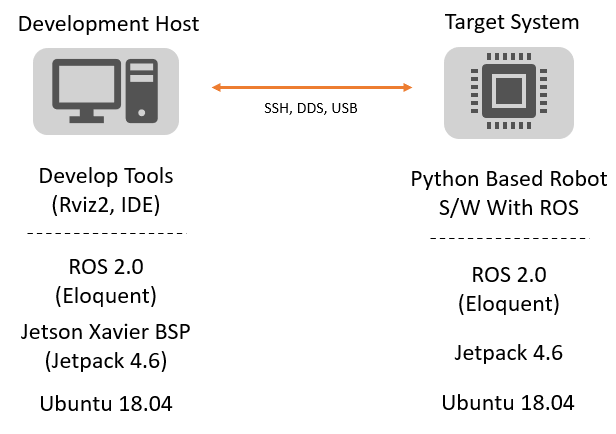
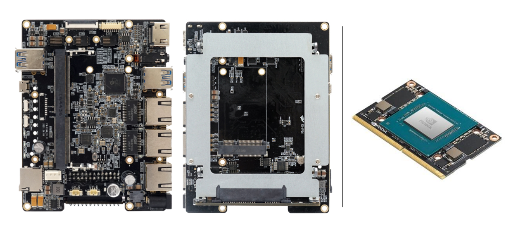
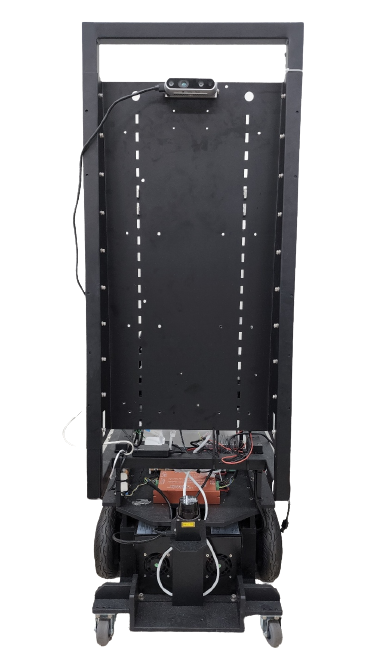
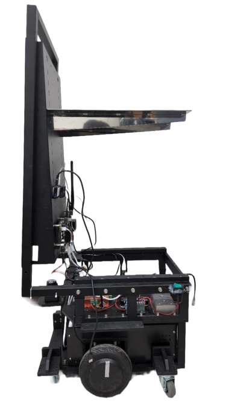
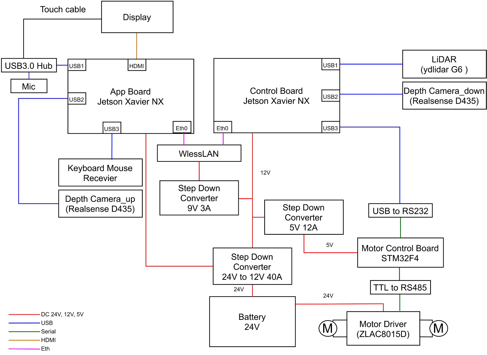

Overview
개발 환경 구성

Jetson Xavier NX 에 Jetpack BSP 를 사용한 OS와 ROS 2.0 그리고 파이썬 기반 로봇 시스템 소프트웨어을 구성한다. 로봇 소프트웨어는 Host환경에서 IDE(vscode, pycharm, vi …)를 사용한 코드 구현 및 수정, 디버그 및 동작 모니터링을 위해 Rviz2 와같은 시각화 툴을 사용한다.
Host: PC (Ubuntu 20.04 or 18.04)
Jetson Xavier NX 개발환경구축용도
Nvidia SDK Manager 사용
Visual Studio, Pycharm IDE 사용
Jetson Xavier NX BSP Version -> Jetpack 4.6 (AverMeadia EN715 NX BSP)
ROS 2.0 Eloquent
Target: Jetson Xavier NX (Ubuntu 18.04)
Carrier board: FelxWATCH / FWR100-BB
ROS 2.0 Eloquent
Jetpack 4.6
Jetson 캐리어 보드 및 Xavier NX 모듈

<!–
Carrier board Spec
Jetson Nano, Jetson Xavier NX 연결가능(260핀SO-DIMM 커넥터) USB
2.0(Micro-USB 5Pin B타입, 1개), USB 3.0(A타입, 4개)
mSATA 커넥터(1개)
SATA 커넥터(1개)
microSD 슬롯(1개)
기가비트이더넷(2개)
디버깅포트(1개)
HDMI(A타입, 1개)
카메라연결부(3 x Double Row 보드to 보드커넥터, 3 CSI Lane 지원)
Camera CLK, I2C, 제어, FAN제어(5V PWM)
3.5mm 4극오디오(1개)
리커버리스위치, 공장초기화스위치
상태LED(이더넷2개, 전원1개)
DC 전원포트(DC 12V/3A) -> (DC 12V/5A 수정예정)
H/W 구성도
본 연구실에서 사용한 EXA 로봇 플랫폼의 하드웨어 구성도이다.
실제 로봇 모습
로봇 전면
로봇 측면


하드웨어 구성
H/W Schematic

<!–